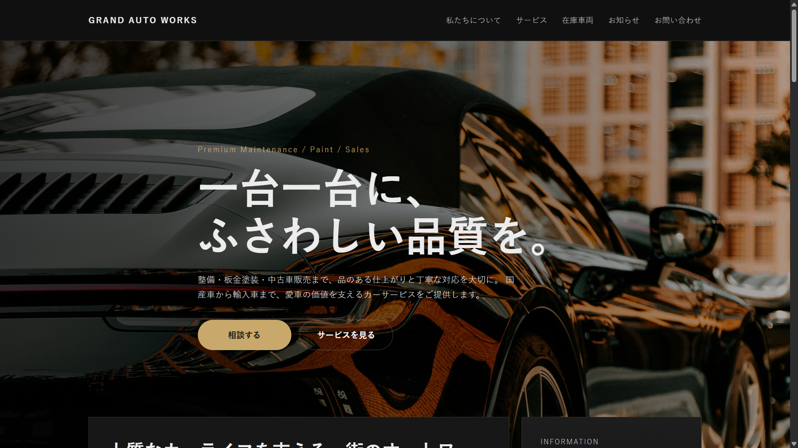
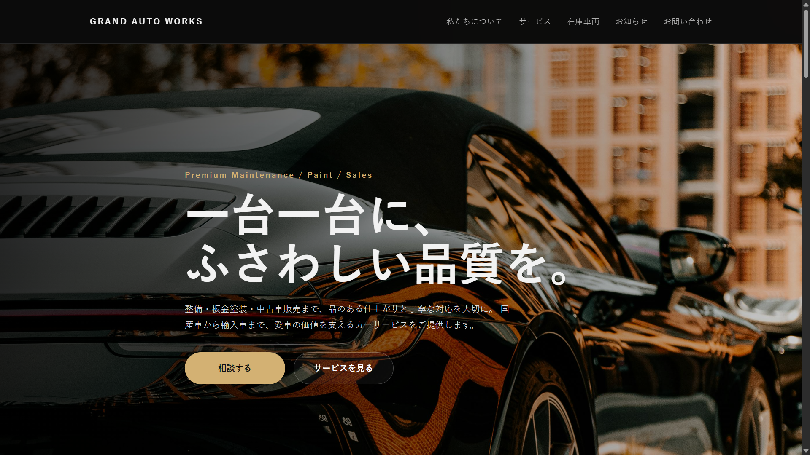
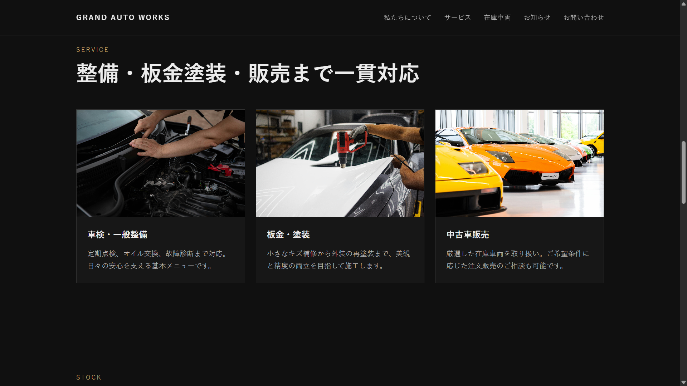
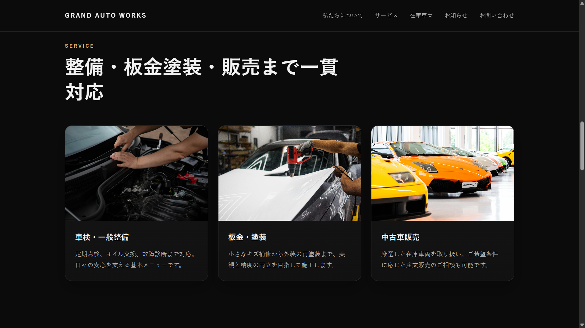
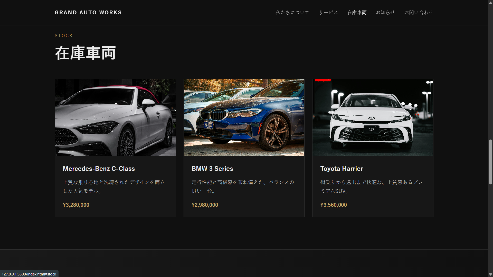
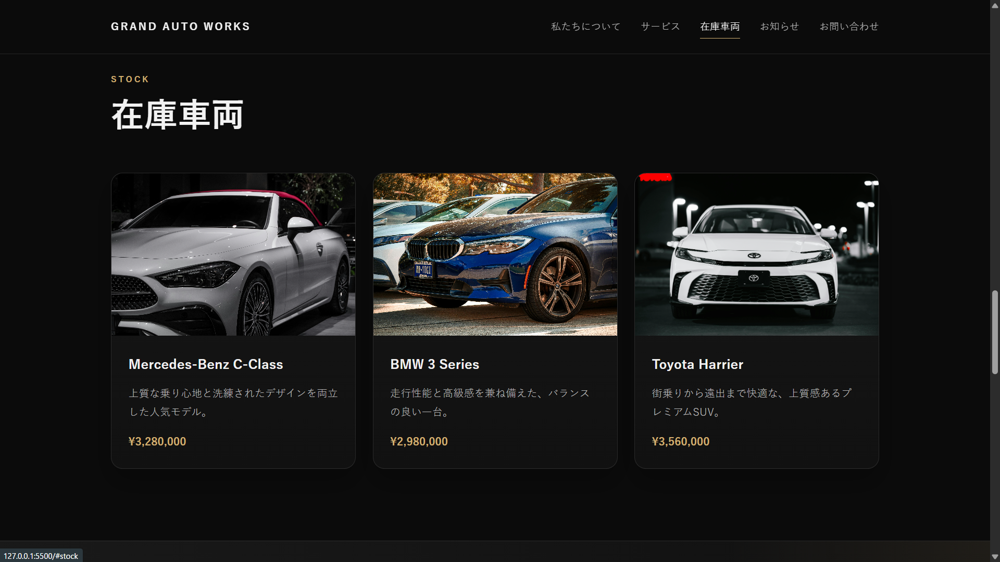
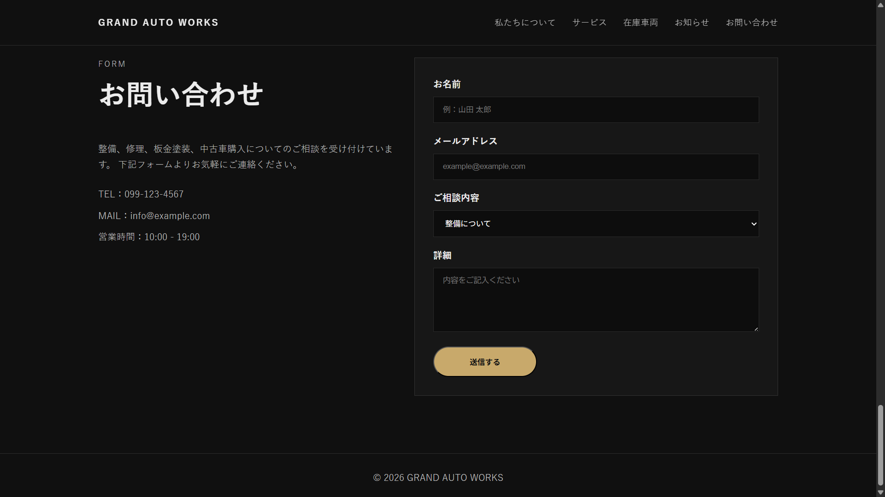
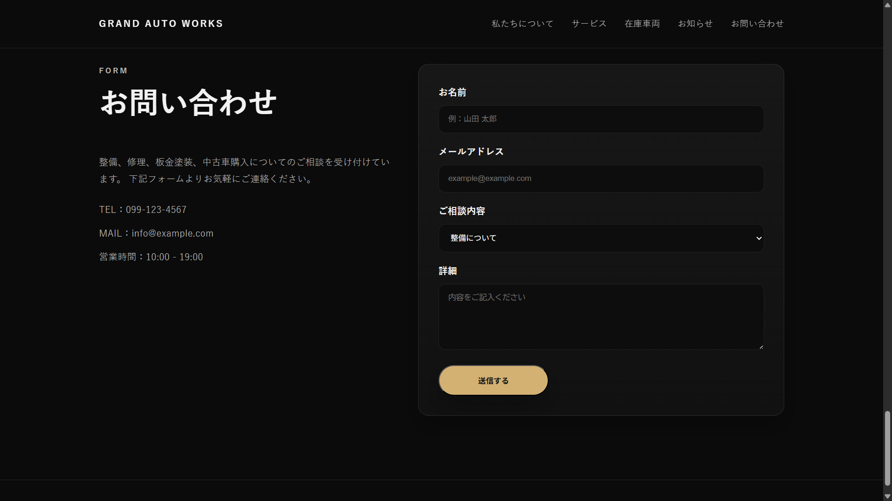

題材
高級感ある車の整備・板金塗装・販売サイトを想定した架空コーポレートサイト。
Before / After Portfolio
整備・板金塗装・中古車販売を想定した架空サイトを題材に、 修正前と修正後の違いが分かるようにまとめたポートフォリオページです。
OVERVIEW
高級感ある車の整備・板金塗装・販売サイトを想定した架空コーポレートサイト。
軽微修正や見た目改善、スマホ最適化、フォーム改善の対応力を見せること。
HTML / CSS / JavaScript を使用。レスポンシブ、ハンバーガーメニューあり。
BEFORE / AFTER
下の画像はあとであなたが撮るスクショを入れる場所。 まずはこの枠に修正前・修正後の画像を入れればOK。
メインビジュアル・見出し・CTAの改善
修正前

修正後

カードデザイン・余白・視認性の改善
修正前

修正後

一覧の見やすさ・高級感・ホバー表現の改善
修正前

修正後

入力欄・余白・見やすさ・導線の改善
修正前

修正後

POINTS
見出しサイズ、余白、CTAボタンの見せ方を調整し、第一印象を強化。
サービス一覧や在庫車両のカードに立体感を追加し、情報を見やすく整理。
入力欄や間隔を調整し、視認性と使いやすさを向上。
レスポンシブ時の余白・ボタン幅・メニュー表示を調整して操作しやすく変更。